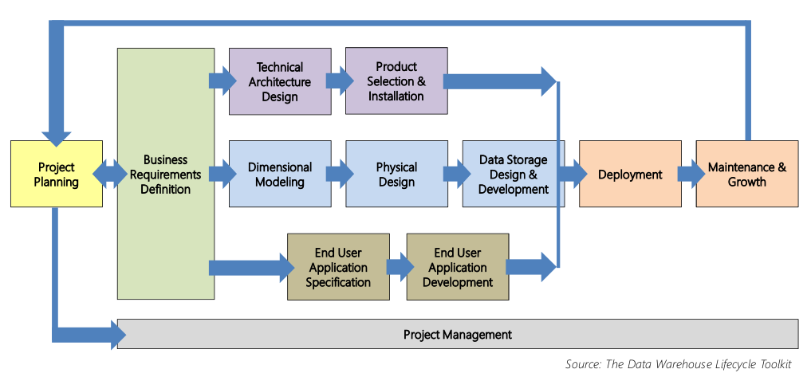
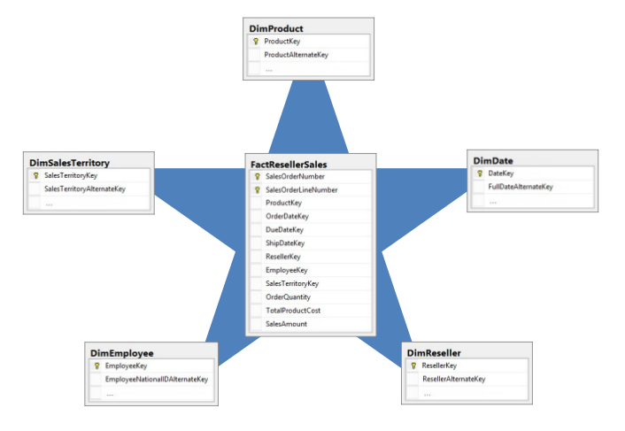

Delivering a Relational Data Warehouse
Table of Contents
Delivering a Relational Data Warehouse on edX
1 DONE Introducing the Data Warehouse
1.1 DONE The Business Case for a Data Warehouse
Definition of Business Intelligence (BI)
According to Gartner, BI is defined as follows.
A broad category of applications and technologies for gathering, storing, analyzing, sharing and providing access to data to help enterprise users make better business decisions.
Peter Myers simplifies it as follows.
It transforms data into knowledge to support decisions.
BI is used by decision makers to:
- Understand the health of the organization.
- Collaborate on a shared view of:
- Data,
- Business logic, and
- Business drivers.
- Reduce the time to decision.
Its goal is often to:
- Impact the bottom line by measuring specific operations.
- Enhance competitive advantage.
BI is no longer a luxury afforded by a larger companies—it is considered an essential part of the IT portfolio.
It encompasses a broad spectrum of technologies and requires skilled professionals to design, develop and manage.
Common questions addressed by BI.
- What sales have been made, and where?
- How are the salespeople performing?
- Which customers are likely to buy from us?
- Which products do our customers buy together?
- What is the customer sentiment of our new product?
Organizations have large volumes of related data stored in a variety of data systems, often in different formats, and possibly residing in different locations (on-premises, or cloud)
Data systems may not:
- Be easily queried.
- Be optimized for analytical queries.
- Contain all the data required, by design, or in history.
- Manage historical context.
- Be available or accessible.
Employees may not have sufficient skills, tools, or permissions to query data systems.
- Commonly, employees do not have access to operational data systems, due to valid concerns that analytic queries can negatively impact on performance.
Systems may not have consistent definitions.
Decision makers need:
- Data catalogs to discover and understand data assets.
- Reliable, secure access to data.
- Flexibility in the ways they access data
- Low latency query results
- Tools and training
- View and interact with data assets and reports
- Produce their own data models, reports, and dashboards (Self-Service BI)
Operational Reporting
- Provides improved access to data from operational data systems.
Business Process or Activity Management
- Provides improved analysis and reporting capabilities for specific business processes or activities.
Data Mart
- Provides improved tools and access to business users of an application to enhance its value by improving decision making.
- Delivers integrated reporting and analytics for a single subject area.
Enterprise Data Warehousing
- Providing comprehensive integration of critical information across the enterprise
- Breaks down the barriers between applications
Demo objectives:
- Describe common data challenges.
- Describe the purpose of the data warehouse.
- Describe the data warehouse ecosystem.
Delivering Business Intelligence
- Organizations accumulate data in many data sources and formats.
- Users may access data sources directly.
- Data sources can be mirrored/replicated to reduce contention.
- Operational data sources can be prepared for analytics.
- The data warehouse manages data for reporting and analytics.
- Enterprise Data Warehouse consists of a series of data marts.
- Staging area may simply the loading of the data warehouse.
- Master data systems can manage consistent definitions.
- Data quality systems can help detect and cleanse dirty data.
- Only complete, credible, clean, consistent data is loaded.
- Data marts are designed with schemas optimized for analytics.
- The data warehouse comprises additional data assets (data models or cubes).
Discussion with Satpal Seehra:
Challenges:
- 3Vs:
- Variety
- Volume
- Velocity
- Data explosion
- Flexibility
The key to success in delivering business intelligence is effective planning.
The data warehouse can enable governed Self-Service BI.
The data warehouse ecosystem consists of components and services to deliver the data warehouse goals.
- Extract, Transform, and Load systems
- Operational Data Stores (ODS)
- Staging systems
- Master Data Management systems
- Data Quality Management systems
- Data models (OLAP)
- Prediction models (data mining, or machine learning)
- Data dictionaries
ETL
- Extract, Transform, and Load (ETL) systems are concerned with moving and transforming data.
- Transformations can include data integration, aggregation, change detection, calculations, conforming or cleansing.
- ETL development is often complex and development can be challenging.
- It is estimated that 60-80% of the data warehouse development effort is dedicated to the ETL process.
ODS
- An ODS delivers a subject-oriented integrated store.
- It serves two possible purposes:
- Integration point for operational systems, providing real-time source for critical details (balances, etc.)
- To supply current and detailed data for decision support
- The ODS is updated frequently.
- Contains all detail data required to describe low-level transactions.
Staging systems
- Staging systems support data loading and transformation requirements
- They are never intended to be accessed by end users
- They can also provide ETL restartability, without the need to reload data from source systems
Master Data Management Systems
- Master Data Management (MDM) systems deliver a master data hub that provides access to authoritative, standardized, and validated versions of data
- They are concerned with the concept of the “Golden Record”
- They are commonly used to define and maintain key business entities, for example, a master list of products
Data Quality Management Systems
- Data Quality Management systems profile data to discover inconsistencies and other anomalies
- They can also perform data cleansing activities to improve the data quality
Data Models
- Data models deliver intuitive browsing and high performance query results—even over large volumes of data.
- Data models are more commonly known as cubes.
Prediction Models
- Prediction models are trained from data warehouse data, to detect patterns, clusters, relationships, and rules.
- They deliver a model which can be used to explore data, or to perform predictions.
Current Trends
- Based on recent technological advancements, today we are witnessing
a paradigm shift in data warehousing.
- Integration of big data analytics
- Real-time insights
- Complex data types
- In-memory technologies
- Seamless integration of data among cloud, on-premises, and hybrid environments
Gartner defines data warehouse as follows.
A data warehouse is a storage architecture designed to hold data extracted from transaction systems, operational data stores and external sources. The warehouse then combines that data in an aggregate, summary form suitable for enterprise-wide data analysis and reporting for predefined business needs.
The five components of a data warehouse are:
- production data sources,
- data extraction and conversion,
- the data warehouse database management system
- data warehouse administration
- BI tools
1.2 DONE Planning for a Data Warehouse
1.2.1 Data Warehouse Planning
The successful implementation of a data warehouse depends on good planning
- Specifically, to manage the integration of numerous associated tasks and components
A well recognized example of a mature approach to design, develop and deploy a data warehouse is the Kimball Business Dimensional Lifecycle

Figure 1: Kimball Business Dimensional Lifecycle
The greatest risk to the success of data warehouse project is lack of trust, which leads to the lack of adoption.
Data warehouse designers must have a sound understanding of the business, and the end user requirements.
The understanding then leads to parallel tracks focused on:
- Technology
- Data
- End user access
Assemble a team of skilled professionals, and manage the project like any other major undertaking.
Wherer possible, strive to future-proof the data warehouse design.
- Design for extensibility, as change is inevitable (new sources, new formats, new columns, new calculations, etc.)
- Know that data volumes almost always grow
- Recognize that data warehouse maintenance will be required
Understand that the end users know best, though they often requires guidance to elicit what they genuinely need.
Do not attempt to deliver entire enterprise data warehouse in a single project.
- Plan to deliver single data marts by an agreed priority and timeline
Demand top-level organizational support for the project, so to avoid internal politics denying access to data, overriding sensible design, and other hindrances.
Be prepared to rethink the data warehouse logical and physical designed based on new technology or evolving requirements.
1.2.2 Disucssion
Leverage in-memory technologies and better indexing techniques.
And future-proof is possible.
1.2.3 Gathering Requirements
Business requirements impact on every aspect of the data warehouse project.
Listening to the right people, and asking the right questions will help you to
- understand the business, and
- produce an accurate list of requirements and priorities.
This is usually achieved by conducting interviews, which can be formal or informal.
Always start with the project sponsor, and ensure that scope is clear, understood and achievable.
- Also enquire whether there have been other data warehouse projects—successful or not
- If there have been other projects, be sure to learn about their outcomes
Next, interview end users, sampling across the organization, and at different levels of the organization (executives to analysts)
- Learn about their particular job challenges and objectives, and understand how they make decisions
Once a consistent theme arises from the business, commence more formal discussions with IT professionals
- business analysts, DBAs, source system experts, data stewards, and software developers
1.2.4 Data Warehouse Architectures
There are several data warehouse design architectures adopted today:
- Kimball’s Dimensional Data Warehouse
- Inmon’s Corporate Information Factory
- Standalone data mart
The Dimensional Data Warehouse is also known as:
- Enterprise data warehouse
- Bus architecture
- Architected data marts
- Virtual data marts
In essence:
- The design is an integrated repository of atomic data.
- All data is organized dimensionally.
- It may be accessed by end users directly.
- Data marts are subject area within the data warehouse, and are not required to be separate databases.
The Corporate Information Factory is also known as:
- Atomic data warehosue
- Enterprise data warehouse
In essence:
- The data warehouse is an integrated repository of atomic data, often normalized to 3NF
- It is not accessed directly
- Dimensional design is used to create data marts which reorganize data into subject areas
The Standalone Data Mart is also known as:
- Data mart
- Silo
- Stovepipe
- Island
It is a subject area implementation without an enterprise context.
It commonly adopts a dimensional design.
It is perhaps useful for a POC, or first subject area exploration.
1.2.5 Demo
AdventureWorks is one of the databases commissioned by Microsoft to support documentation and tutorials for SQL Server.
The fictitious AdventureWorks is a large, multinational manufacturing company which manufactures and sells bicyles to North American, European, and Pacific commercial markets.
The products are sold through reseller and Internet channels.
1.2.6 Additional Resources
Data Warehouse Design Considerations by Dave Browning and Joy Mundy can be downloaded from SQL Server 2000 Retired Technical documentation (p. 19613–19629).
A standalone copy can be found here.
1.3 DONE Exploring Data Warehouse Architectures
1.3.1 Hardware Considerations
If building the data warehouse on-premises, the project is responsible for technical architecture, product selection, and installation.
Data warehouse deployments on the cloud, to a large extent, remove the need to consider or manage technical specifics.
Cloud deployments can be:
- PaaS (Platform as a Service)—hardware and software infrastructure is provided.
- Iass (Infrastructure as a Service)—hosted virtual machines (VM), with the ability to configure a degree of scale
To build a high-performance data warehouse, careful hardware considerations must be made.
The goal is to achieve high scalability and performance, which is achieved through parallelism and with high I/O throughput.
In addition, you need to understand:
- Data size
- Volatility of data
- Number of concurrent users
- Number of business processes
- Type of software
- ETL workload
- Data model and machine learning processing workload
- Query workload
- Existing platforms and software choices, and available skills
- Disaster recovery and high availability requirements
- Budget
In general, considerations need to be given to:
- Number, and placement, of servers
- Server subsystems:
- Processors
- Memory
- Disk
- Networking
In large deplyments, servers can be dedicated to specific data warehouse roles:
- Staging
- Master Data Management
- Data Quality Management
- ETL processing
- Data warehouse
- Data mart
- Data models and machine learning models
- Reporting
Consider co-locating services, especially where workloads are compatible.
Servers can be located on-premises, or the cloud (IaaS), or a hybrid topology spanning both on-premises and the cloud.
Give considerations also to development and test environments.
Scale and performance is achieved with parallel processing architectures.
- SMP (Symmetric Multiprocessing)—scale wthin a single machine
- MPP (Massively Parallel Processing)—scale across machines
- Ensure software or design compatibility
ETL processing, aggregation, indexing, data model and machine learning processing, and certain queries can be very processor-intensive.
Thanks to the decreased cost of memory, software is increasingly exploiting available memory
- In general, memory is x100 faster than disk I/O
For high performance, plan for sufficient memory to host entire datasets and models
Ensure operating systems can use the installed memory.
Disk I/O performance should be a key consideration.
The typical data warehouse workload is especially I/O intensive.
The underlying I/O system for a data warehouse should be designed to meet these heavy requirements.
Give consideration to appropriate storage solutions:
- RAID (Redundant Array of Independent Disks)
- SSD (Solid State Drive)
- SAN (Storage Area Network)
- NAS (Network-Attached Storage)
Ensure sufficent network bandwidth is available to transfer data volumes, especially during ETL processing and data model processing.
Consider also network throughput for SAN and NAS devices
When leveraging cloud services, consdier Internet bandwidth and availability:
- Paas or IaaS
- Data sources and data services
Work closely with infrastructure experts.
Design for growth.
Consider new in-memory technologies available for relational databases and data models.
Be aware of hardware and software decisions and design solutions to exploit them accordingly.
Consider cloud alternatives, including hybrid opportunities.
2 TODO Designing a Relational Data Warehouse Schema
2.1 TODO Designing Dimension Tables
2.1.1 Star Table

Transform source data into a relational model, optimized for analytic query workloads (efficient filtering, grouping, and aggregation).
Deliver higher-performance queries.
- Fewer table joins
- Higher likelihood of useful indexes
Use mature modeling techniques that are widely supported by many BI tools.
Require low maintenance as the data warehouse design evolves.